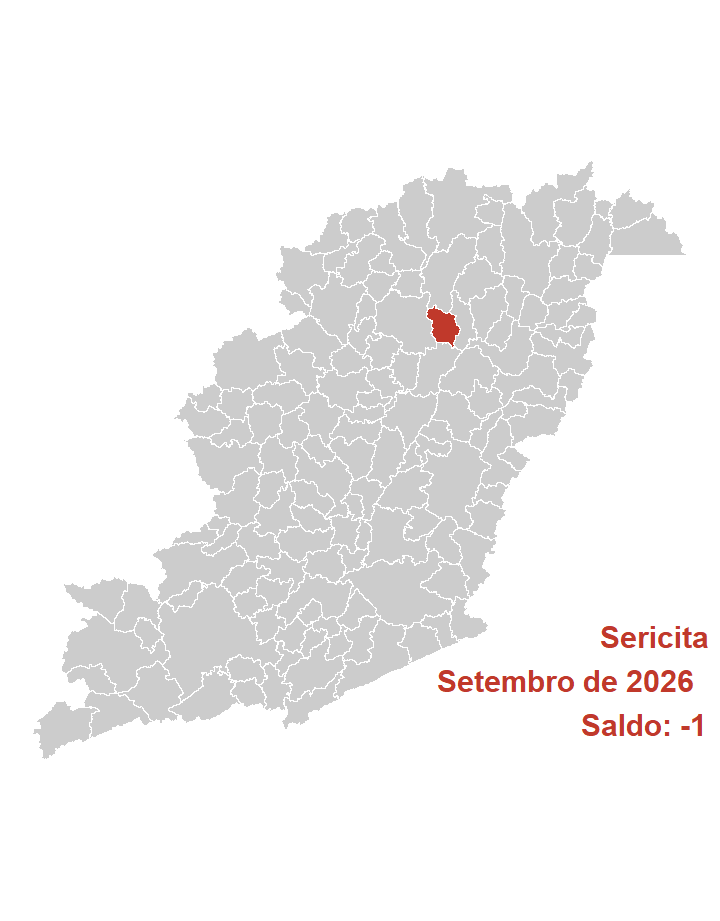
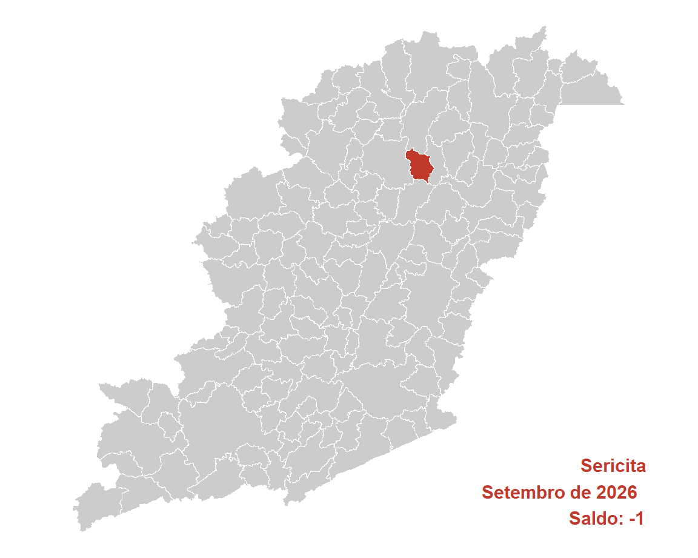

| Ano | Brasil | Estado | Mesorregião | Microrregião | Município |
|---|---|---|---|---|---|
| 2026 | 121.305 | 8.102 | 1.483 | 91 | -1 |
| 2025 | 214.609 | 11.828 | 1.004 | -323 | -6 |
| 2024 | 252.277 | 16.171 | 2.023 | 45 | 5 |
| 2023 | 204.771 | 11.849 | 511 | -234 | 4 |
| 2022 | 278.567 | 21.956 | 1.316 | -371 | -3 |
| 2021 | 330.133 | 26.058 | 1.725 | -191 | 4 |
| 2020 | 299.724 | 31.194 | 2.230 | 15 | 3 |
| 2019 | 157.213 | 3.841 | 243 | -468 | -5 |
| 2018 | 137.336 | 5.200 | 6 | 24 | 3 |
| 2017 | 34.392 | -4.291 | 141 | -625 | -7 |
| 2016 | -39.282 | -16.238 | -1.582 | -659 | 1 |
| 2015 | -95.602 | -32.423 | -1.893 | -67 | -11 |
| 2014 | 123.785 | -840 | -216 | -846 | -1 |
| 2013 | 211.068 | 6.925 | 828 | 276 | -16 |
| 2012 | 150.334 | -1.180 | -479 | -1.238 | 2 |
| 2011 | 209.078 | 3.354 | 811 | -461 | 5 |
| 2010 | 246.875 | 8.448 | 2.124 | 206 | 0 |
| 2008 | 282.841 | 12.040 | -44 | 24 | 1 |
| 2007 | 251.168 | 2.258 | -438 | -755 | 1 |
| Ano | Mes | Brasil | Estado | Mesorregião | Microrregião | Município |
|---|---|---|---|---|---|---|
| 2026 | Setembro | 121.305 | 8.102 | 1.483 | 91 | -1 |
| 2026 | Agosto | 161.062 | 8.899 | 1.785 | 139 | 5 |
| 2026 | Julho | 56.007 | 4.383 | 595 | 62 | 0 |
| 2026 | Junho | 136.423 | 20.734 | 1.120 | 492 | 9 |
| 2026 | Maio | 81.475 | 9.772 | 129 | 54 | -9 |
| 2026 | Abril | 79.266 | 8.473 | 609 | 75 | -7 |
| 2026 | Março | 227.736 | 37.773 | 1.747 | 29 | -8 |
| 2026 | Fevereiro | 267.915 | 24.138 | 114 | 14 | 5 |
| 2026 | Janeiro | 117.725 | 7.503 | 66 | 194 | 1 |
| 2025 | Dezembro | -635.579 | -74.187 | -6.017 | -1.085 | 0 |
| 2025 | Novembro | 81.164 | -9.104 | 863 | 165 | -2 |
| 2025 | Outubro | 92.574 | -4.284 | 829 | 127 | 1 |
| Acum. 2026 | 1.248.914 | 129.777 | 7.648 | 1.150 | -5 | |
| Acumulado 12m | 787.073 | 42.202 | 3.323 | 357 | -6 |
| CBO | Brasil | Estado | Mesorregião | Microrregião | Município |
|---|---|---|---|---|---|
| Forças armadas | 7 | 1 | 1 | NA | NA |
| Poder público | -10.739 | -1.172 | -20 | 1 | NA |
| Ciências e artes | 4.334 | 330 | 144 | 31 | NA |
| Técnicos de nível médio | 11.614 | 1.539 | 168 | -16 | NA |
| Serviços administrativo | 26.878 | 5.689 | 355 | -10 | 2 |
| Serviços e comércio | 50.360 | 6.230 | 609 | 24 | 2 |
| Agropecuária | 7.561 | -7.620 | -125 | 21 | NA |
| Bens e serviços industriais 1 | 36.684 | 3.617 | 226 | 13 | -3 |
| Bens e serviços industriais 2 | -6.343 | -111 | 19 | 29 | -1 |
| Reparação e manutenção | 949 | -401 | 106 | -2 | -1 |
| CNAE | Brasil | Estado | Mesorregião | Microrregião | Município |
|---|---|---|---|---|---|
| Agropecuária/florestal | -4.381 | -8.221 | -147 | 19 | NA |
| Extrativismo | -20 | -481 | 37 | 1 | NA |
| Indústria de transformação | 15.744 | 579 | -30 | 50 | NA |
| Eletricidade e gás | 1.177 | 41 | 7 | NA | NA |
| Água e esgoto | 2.384 | 448 | -21 | -3 | NA |
| Construção | 9.468 | 1.680 | 67 | -28 | -4 |
| Comércio de automotores | 15.697 | 3.212 | 565 | 45 | 0 |
| Transporte e correios | 13.240 | 1.181 | 91 | -14 | NA |
| Alojamento e alimentação | 10.581 | 1.256 | 131 | 1 | 1 |
| Comunicação | 4.628 | 1.854 | 15 | -14 | NA |
| Atividades financeiras | -596 | 146 | 11 | 3 | 2 |
| Imobiliárias | 521 | 28 | -6 | 3 | NA |
| Atividades científicas e técnicas | 6.540 | 294 | 54 | -16 | NA |
| Atividades administrativas | 18.386 | 1.591 | 260 | -6 | NA |
| Administração pública | 1.090 | 11 | 12 | 8 | NA |
| Educação | 9.538 | 2.135 | 103 | 9 | NA |
| Saúde e serviços sociais | 15.403 | 1.775 | 265 | 19 | NA |
| Artes, cultura e esportes | 1.570 | 228 | 41 | 5 | NA |
| Serviços | 327 | 344 | 31 | 9 | NA |
| Domésticos | 14 | 5 | NA | NA | NA |
| Organismos internacionais | -1 | NA | NA | NA | NA |
| Não classificado | -5 | -4 | -3 | NA | NA |
| Educ | Brasil | Estado | Mesorregião | Microrregião | Município |
|---|---|---|---|---|---|
| Analfabeto | 1.835 | 0 | -11 | -2 | NA |
| Até o 5º ano incompleto | 4.523 | -804 | -1 | -10 | NA |
| 5º ano completo | -195 | -859 | -66 | 1 | NA |
| 6º ano completo até o 9º ano incompleto | 879 | -526 | 63 | -15 | 0 |
| Fundamental completo | -1.364 | -1.224 | -57 | -3 | 0 |
| Médio incompleto | 17.258 | 2.822 | 239 | 20 | -3 |
| Médio completo | 82.812 | 6.288 | 1.049 | 71 | 0 |
| Superior incompleto | 5.227 | 986 | 61 | 10 | 1 |
| Superior completo | 10.330 | 1.419 | 206 | 19 | 1 |
| Idade | Brasil | Estado | Mesorregião | Microrregião | Município |
|---|---|---|---|---|---|
| 10 a 14 anos | 2.483 | 529 | 43 | NA | NA |
| 15 a 17 anos | 23.954 | 4.936 | 418 | 15 | -2 |
| 18 a 24 anos | 79.856 | 6.043 | 736 | 70 | 2 |
| 25 a 29 anos | 7.177 | -667 | 6 | -24 | 2 |
| 30 a 39 anos | 7.537 | -379 | 192 | 3 | -1 |
| 40 a 49 anos | 10.561 | 232 | 212 | 44 | -1 |
| 50 a 64 anos | -6.095 | -1.915 | -73 | -19 | -2 |
| 65 anos ou mais | -5.962 | -781 | -59 | 0 | NA |
| NA | 1.794 | 104 | 8 | 2 | 1 |
| Raça | Brasil | Estado | Mesorregião | Microrregião | Município |
|---|---|---|---|---|---|
| Indígena | 15.493 | 3.090 | 365 | 17 | -1 |
| Branca | 17.416 | 1.288 | 212 | 17 | 3 |
| 3 | 96.805 | 4.887 | 1.023 | 71 | -2 |
| Preta | 229 | -39 | -27 | -5 | -1 |
| 5 | 80 | -76 | -4 | 1 | NA |
| Amarela | -8.304 | -988 | -80 | -8 | NA |
| 9 | -414 | -60 | -6 | -2 | NA |
| Gênero | Brasil | Estado | Mesorregião | Microrregião | Município |
|---|---|---|---|---|---|
| Homens | 59.129 | 1.650 | 670 | 11 | -3 |
| Mulheres | 62.176 | 6.452 | 813 | 80 | 2 |
| Grande_setor | Brasil | Estado | Mesorregião | Microrregião | Município |
|---|---|---|---|---|---|
| Indústria | 19.285 | 587 | -7 | 48 | NA |
| Construção civil | 9.468 | 1.680 | 67 | -28 | -4 |
| Comércio | 15.697 | 3.212 | 565 | 45 | 0 |
| Serviços | 81.241 | 10.848 | 1.008 | 7 | 3 |
| Agropecuária, extrativismo vegetal,caça e pesca | -4.381 | -8.221 | -147 | 19 | NA |
| Não classificado | -5 | -4 | -3 | NA | NA |
| Setores | Brasil | Estado | Mesorregião | Microrregião | Município |
|---|---|---|---|---|---|
| Extrativismo mineral | -20 | -481 | 37 | 1 | NA |
| Indústria de transformação | 15.744 | 579 | -30 | 50 | NA |
| Serviços industriais de utilidade pública | 3.561 | 489 | -14 | -3 | NA |
| Construção civil | 9.468 | 1.680 | 67 | -28 | -4 |
| Comércio | 15.697 | 3.212 | 565 | 45 | 0 |
| Serviços | 80.152 | 10.837 | 996 | -1 | 3 |
| Adiminstração pública | 1.084 | 7 | 9 | 8 | NA |
| Agropecuária, extrativismo vegetal, caça e pesca | -4.381 | -8.221 | -147 | 19 | NA |
| Ano | Brasil | Estado | Mesorregião | Microrregião | Município |
|---|---|---|---|---|---|
| 2002 | 28.683.913 | 3.046.362 | 285.345 | 21.779 | 227 |
| 2003 | 29.544.927 | 3.138.026 | 288.853 | 22.297 | 294 |
| 2004 | 31.407.576 | 3.332.775 | 298.898 | 22.052 | 284 |
| 2005 | 33.238.617 | 3.592.560 | 322.026 | 24.590 | 271 |
| 2006 | 32.903.959 | 3.744.043 | 337.470 | 25.106 | 329 |
| 2007 | 37.607.430 | 4.036.203 | 354.945 | 25.752 | 342 |
| 2008 | 39.441.566 | 4.184.183 | 369.202 | 26.353 | 296 |
| 2009 | 41.207.546 | 4.350.839 | 388.196 | 27.353 | 382 |
| 2010 | 44.068.355 | 4.646.891 | 408.037 | 28.964 | 398 |
| 2011 | 46.310.631 | 4.850.976 | 429.166 | 33.069 | 470 |
| 2012 | 47.458.712 | 4.928.225 | 439.074 | 32.985 | 404 |
| 2013 | 48.948.433 | 5.057.080 | 454.446 | 32.491 | 698 |
| 2014 | 49.571.510 | 5.071.906 | 456.058 | 33.195 | 734 |
| 2015 | 48.060.807 | 4.821.116 | 445.516 | 33.451 | 732 |
| 2016 | 46.060.198 | 4.628.701 | 426.384 | 31.990 | 684 |
| 2017 | 46.281.590 | 4.710.919 | 435.944 | 34.227 | 698 |
| 2018 | 46.631.115 | 4.760.830 | 436.333 | 33.317 | 505 |
| 2019 | 46.748.356 | 4.856.025 | 435.241 | 34.593 | 611 |
| 2020 | 46.236.176 | 4.814.874 | 423.457 | 33.923 | 498 |
| 2021 | 48.728.871 | 5.148.435 | 448.511 | 36.196 | 636 |
| 2022 | 52.788.939 | 5.523.279 | 476.377 | 39.443 | 742 |
| 2023 | 54.705.614 | 5.633.160 | 497.668 | 40.657 | 760 |
| 2024 | 57.789.526 | 6.094.585 | 511.827 | 40.012 | 759 |
| 2025 | 60.688.704 | 6.325.291 | 538.504 | 41.894 | 860 |
| NA | 0 | 0 | 0 | 0 | NA |
| Ano | Brasil | Estado | Mesorregião | Microrregião |
|---|---|---|---|---|
| 2002 | 0,0008 | 0,0075 | 0,0796 | 1,0423 |
| 2003 | 0,0010 | 0,0094 | 0,1018 | 1,3186 |
| 2004 | 0,0009 | 0,0085 | 0,0950 | 1,2879 |
| 2005 | 0,0008 | 0,0075 | 0,0842 | 1,1021 |
| 2006 | 0,0010 | 0,0088 | 0,0975 | 1,3104 |
| 2007 | 0,0009 | 0,0085 | 0,0964 | 1,3281 |
| 2008 | 0,0008 | 0,0071 | 0,0802 | 1,1232 |
| 2009 | 0,0009 | 0,0088 | 0,0984 | 1,3966 |
| 2010 | 0,0009 | 0,0086 | 0,0975 | 1,3741 |
| 2011 | 0,0010 | 0,0097 | 0,1095 | 1,4213 |
| 2012 | 0,0009 | 0,0082 | 0,0920 | 1,2248 |
| 2013 | 0,0014 | 0,0138 | 0,1536 | 2,1483 |
| 2014 | 0,0015 | 0,0145 | 0,1609 | 2,2112 |
| 2015 | 0,0015 | 0,0152 | 0,1643 | 2,1883 |
| 2016 | 0,0015 | 0,0148 | 0,1604 | 2,1382 |
| 2017 | 0,0015 | 0,0148 | 0,1601 | 2,0393 |
| 2018 | 0,0011 | 0,0106 | 0,1157 | 1,5157 |
| 2019 | 0,0013 | 0,0126 | 0,1404 | 1,7663 |
| 2020 | 0,0011 | 0,0103 | 0,1176 | 1,4680 |
| 2021 | 0,0013 | 0,0124 | 0,1418 | 1,7571 |
| 2022 | 0,0014 | 0,0134 | 0,1558 | 1,8812 |
| 2023 | 0,0014 | 0,0135 | 0,1527 | 1,8693 |
| 2024 | 0,0013 | 0,0125 | 0,1483 | 1,8969 |
| 2025 | 0,0014 | 0,0136 | 0,1597 | 2,0528 |
| NA | NA | NA | NA | NA |
| Ano | Brasil | Estado | Mesorregião | Microrregião | Município |
|---|---|---|---|---|---|
| 2002 | NA | NA | NA | NA | NA |
| 2003 | 3,00 | 3,01 | 1,23 | 2,38 | 29,52 |
| 2004 | 6,30 | 6,21 | 3,48 | -1,10 | -3,40 |
| 2005 | 5,83 | 7,79 | 7,74 | 11,51 | -4,58 |
| 2006 | -1,01 | 4,22 | 4,80 | 2,10 | 21,40 |
| 2007 | 14,29 | 7,80 | 5,18 | 2,57 | 3,95 |
| 2008 | 4,88 | 3,67 | 4,02 | 2,33 | -13,45 |
| 2009 | 4,48 | 3,98 | 5,14 | 3,79 | 29,05 |
| 2010 | 6,94 | 6,80 | 5,11 | 5,89 | 4,19 |
| 2011 | 5,09 | 4,39 | 5,18 | 14,17 | 18,09 |
| 2012 | 2,48 | 1,59 | 2,31 | -0,25 | -14,04 |
| 2013 | 3,14 | 2,61 | 3,50 | -1,50 | 72,77 |
| 2014 | 1,27 | 0,29 | 0,35 | 2,17 | 5,16 |
| 2015 | -3,05 | -4,94 | -2,31 | 0,77 | -0,27 |
| 2016 | -4,16 | -3,99 | -4,29 | -4,37 | -6,56 |
| 2017 | 0,48 | 1,78 | 2,24 | 6,99 | 2,05 |
| 2018 | 0,76 | 1,06 | 0,09 | -2,66 | -27,65 |
| 2019 | 0,25 | 2,00 | -0,25 | 3,83 | 20,99 |
| 2020 | -1,10 | -0,85 | -2,71 | -1,94 | -18,49 |
| 2021 | 5,39 | 6,93 | 5,92 | 6,70 | 27,71 |
| 2022 | 8,33 | 7,28 | 6,21 | 8,97 | 16,67 |
| 2023 | 3,63 | 1,99 | 4,47 | 3,08 | 2,43 |
| 2024 | 5,64 | 8,19 | 2,85 | -1,59 | -0,13 |
| 2025 | 5,02 | 3,79 | 5,21 | 4,70 | 13,31 |
| NA | -100,00 | -100,00 | -100,00 | -100,00 | NA |
| Ano | Brasil | Estado | Mesorregião | Microrregião | Município |
|---|---|---|---|---|---|
| 2002 | 0,00 | 0,00 | 0,00 | 0,00 | 0,00 |
| 2003 | 3,00 | 3,01 | 1,23 | 2,38 | 29,52 |
| 2004 | 9,50 | 9,40 | 4,75 | 1,25 | 25,11 |
| 2005 | 15,88 | 17,93 | 12,85 | 12,91 | 19,38 |
| 2006 | 14,71 | 22,90 | 18,27 | 15,28 | 44,93 |
| 2007 | 31,11 | 32,49 | 24,39 | 18,24 | 50,66 |
| 2008 | 37,50 | 37,35 | 29,39 | 21,00 | 30,40 |
| 2009 | 43,66 | 42,82 | 36,04 | 25,59 | 68,28 |
| 2010 | 53,63 | 52,54 | 43,00 | 32,99 | 75,33 |
| 2011 | 61,45 | 59,24 | 50,40 | 51,84 | 107,05 |
| 2012 | 65,45 | 61,77 | 53,87 | 51,45 | 77,97 |
| 2013 | 70,65 | 66,00 | 59,26 | 49,18 | 207,49 |
| 2014 | 72,82 | 66,49 | 59,83 | 52,42 | 223,35 |
| 2015 | 67,55 | 58,26 | 56,13 | 53,59 | 222,47 |
| 2016 | 60,58 | 51,94 | 49,43 | 46,88 | 201,32 |
| 2017 | 61,35 | 54,64 | 52,78 | 57,16 | 207,49 |
| 2018 | 62,57 | 56,28 | 52,91 | 52,98 | 122,47 |
| 2019 | 62,98 | 59,40 | 52,53 | 58,84 | 169,16 |
| 2020 | 61,19 | 58,05 | 48,40 | 55,76 | 119,38 |
| 2021 | 69,88 | 69,00 | 57,18 | 66,20 | 180,18 |
| 2022 | 84,04 | 81,31 | 66,95 | 81,11 | 226,87 |
| 2023 | 90,72 | 84,91 | 74,41 | 86,68 | 234,80 |
| 2024 | 101,47 | 100,06 | 79,37 | 83,72 | 234,36 |
| 2025 | 111,58 | 107,63 | 88,72 | 92,36 | 278,85 |
| NA | -100,00 | -100,00 | -100,00 | -100,00 | NA |
| Ano | Brasil | Estado | Mesorregião | Microrregião | Município |
|---|---|---|---|---|---|
| 2002 | 885,39 | 699,14 | 526,14 | 409,40 | 330,79 |
| 2003 | 985,30 | 783,42 | 585,15 | 461,87 | 381,85 |
| 2004 | 1.058,63 | 846,89 | 634,30 | 480,02 | 375,98 |
| 2005 | 1.135,85 | 904,05 | 685,47 | 549,02 | 413,61 |
| 2006 | 1.245,61 | 1.006,04 | 744,63 | 603,71 | 450,52 |
| 2007 | 1.301,87 | 1.065,81 | 802,71 | 668,15 | 486,30 |
| 2008 | 1.436,70 | 1.181,73 | 876,96 | 715,97 | 520,57 |
| 2009 | 1.535,74 | 1.273,12 | 963,89 | 801,46 | 620,62 |
| 2010 | 1.675,01 | 1.414,21 | 1.069,58 | 886,59 | 682,76 |
| 2011 | 1.827,45 | 1.560,35 | 1.172,93 | 1.088,49 | 764,43 |
| 2012 | 1.996,90 | 1.692,70 | 1.292,52 | 1.253,51 | 826,04 |
| 2013 | 2.177,60 | 1.861,57 | 1.399,74 | 1.179,61 | 890,54 |
| 2014 | 2.352,42 | 2.010,33 | 1.536,23 | 1.272,59 | 954,52 |
| 2015 | 2.541,18 | 2.165,84 | 1.645,82 | 1.370,66 | 1.056,59 |
| 2016 | 2.731,61 | 2.342,07 | 1.809,10 | 1.498,64 | 1.142,26 |
| 2017 | 2.850,41 | 2.440,03 | 1.918,43 | 1.612,42 | 1.199,79 |
| 2018 | 2.939,05 | 2.489,11 | 1.983,97 | 1.638,95 | 1.229,30 |
| 2019 | 2.921,13 | 2.495,23 | 1.953,96 | 1.720,68 | 1.255,34 |
| 2020 | 3.003,69 | 2.598,34 | 2.015,89 | 1.759,60 | 1.348,07 |
| 2021 | 3.295,76 | 2.889,99 | 2.268,66 | 1.951,37 | 1.634,19 |
| 2022 | 3.437,29 | 2.916,94 | 2.333,04 | 2.092,50 | 1.579,35 |
| 2023 | 3.383,32 | 3.022,90 | 2.472,81 | 2.312,85 | 1.632,46 |
| 2024 | 3.728,47 | 3.255,82 | 2.658,71 | 2.464,43 | 1.757,97 |
| 2025 | 3.760,69 | 3.221,18 | 2.794,52 | 2.601,28 | 2.013,73 |
| NA | NA | NA | NA | NA | NA |
| Ano | Estado | Mesorregião | Microrregião | Município |
|---|---|---|---|---|
| 2002 | 78,9650 | 59,4250 | 46,2396 | 37,3616 |
| 2003 | 79,5106 | 59,3880 | 46,8761 | 38,7545 |
| 2004 | 79,9994 | 59,9173 | 45,3437 | 35,5161 |
| 2005 | 79,5923 | 60,3491 | 48,3358 | 36,4143 |
| 2006 | 80,7669 | 59,7806 | 48,4668 | 36,1684 |
| 2007 | 81,8673 | 61,6586 | 51,3224 | 37,3537 |
| 2008 | 82,2528 | 61,0401 | 49,8344 | 36,2337 |
| 2009 | 82,8995 | 62,7641 | 52,1871 | 40,4119 |
| 2010 | 84,4297 | 63,8548 | 52,9306 | 40,7614 |
| 2011 | 85,3838 | 64,1840 | 59,5633 | 41,8303 |
| 2012 | 84,7663 | 64,7266 | 62,7728 | 41,3662 |
| 2013 | 85,4872 | 64,2790 | 54,1701 | 40,8954 |
| 2014 | 85,4578 | 65,3041 | 54,0971 | 40,5762 |
| 2015 | 85,2299 | 64,7662 | 53,9380 | 41,5788 |
| 2016 | 85,7394 | 66,2282 | 54,8629 | 41,8165 |
| 2017 | 85,6027 | 67,3036 | 56,5679 | 42,0917 |
| 2018 | 84,6910 | 67,5037 | 55,7646 | 41,8264 |
| 2019 | 85,4200 | 66,8905 | 58,9045 | 42,9746 |
| 2020 | 86,5048 | 67,1137 | 58,5813 | 44,8803 |
| 2021 | 87,6881 | 68,8357 | 59,2086 | 49,5847 |
| 2022 | 84,8615 | 67,8744 | 60,8765 | 45,9475 |
| 2023 | 89,3471 | 73,0881 | 68,3604 | 48,2503 |
| 2024 | 87,3232 | 71,3083 | 66,0976 | 47,1498 |
| 2025 | 85,6538 | 74,3088 | 69,1703 | 53,5467 |
| NA | NA | NA | NA | NA |
| Grandes.Grupos.CBO | Brasil | Estado | Mesorregião | Microrregião | Município |
|---|---|---|---|---|---|
| Membros das Forças Armadas | 0 | 0 | 0 | 0 | 0 |
| (NaN) | (NaN) | (NaN) | (NaN) | (NaN) | |
| Membros superiores do poder público, dirigentes e gerentes | 0 | 0 | 0 | 0 | 0 |
| (NaN) | (NaN) | (NaN) | (NaN) | (NaN) | |
| Profissionais das ciências e das artes | 0 | 0 | 0 | 0 | 0 |
| (NaN) | (NaN) | (NaN) | (NaN) | (NaN) | |
| Técnicos de nível médio | 0 | 0 | 0 | 0 | 0 |
| (NaN) | (NaN) | (NaN) | (NaN) | (NaN) | |
| Trabalhadores de serviços administrativos | 0 | 0 | 0 | 0 | 0 |
| (NaN) | (NaN) | (NaN) | (NaN) | (NaN) | |
| Trabalhadores dos serviços, vendedores do comércio | 0 | 0 | 0 | 0 | 0 |
| (NaN) | (NaN) | (NaN) | (NaN) | (NaN) | |
| Trabalhadores agropecuários, florestais e da pesca | 0 | 0 | 0 | 0 | 0 |
| (NaN) | (NaN) | (NaN) | (NaN) | (NaN) | |
| Trabalhadores da produção de bens e serviços industriais (1) | 0 | 0 | 0 | 0 | 0 |
| (NaN) | (NaN) | (NaN) | (NaN) | (NaN) | |
| Trabalhadores da produção de bens e serviços industriais (2) | 0 | 0 | 0 | 0 | 0 |
| (NaN) | (NaN) | (NaN) | (NaN) | (NaN) | |
| Trabalhadores em serviços de reparação e manutenção | 0 | 0 | 0 | 0 | 0 |
| (NaN) | (NaN) | (NaN) | (NaN) | (NaN) | |
| Não classificados | 0 | 0 | 0 | 0 | 0 |
| (NaN) | (NaN) | (NaN) | (NaN) | (NaN) |
| CNAE | Brasil | Estado | Mesorregião | Microrregião | Município |
|---|---|---|---|---|---|
| Agropecuária/florestal | 0 | 0 | 0 | 0 | 0 |
| (NaN) | (NaN) | (NaN) | (NaN) | (NaN) | |
| Extrativismo | 0 | 0 | 0 | 0 | 0 |
| (NaN) | (NaN) | (NaN) | (NaN) | (NaN) | |
| Indústria de transformação | 0 | 0 | 0 | 0 | 0 |
| (NaN) | (NaN) | (NaN) | (NaN) | (NaN) | |
| Eletricidade e gás | 0 | 0 | 0 | 0 | 0 |
| (NaN) | (NaN) | (NaN) | (NaN) | (NaN) | |
| Água e esgoto | 0 | 0 | 0 | 0 | 0 |
| (NaN) | (NaN) | (NaN) | (NaN) | (NaN) | |
| Construção | 0 | 0 | 0 | 0 | 0 |
| (NaN) | (NaN) | (NaN) | (NaN) | (NaN) | |
| Comércio de automotores | 0 | 0 | 0 | 0 | 0 |
| (NaN) | (NaN) | (NaN) | (NaN) | (NaN) | |
| Transporte e correios | 0 | 0 | 0 | 0 | 0 |
| (NaN) | (NaN) | (NaN) | (NaN) | (NaN) | |
| Alojamento e alimentação | 0 | 0 | 0 | 0 | 0 |
| (NaN) | (NaN) | (NaN) | (NaN) | (NaN) | |
| Comunicação | 0 | 0 | 0 | 0 | 0 |
| (NaN) | (NaN) | (NaN) | (NaN) | (NaN) | |
| Atividades financeiras | 0 | 0 | 0 | 0 | 0 |
| (NaN) | (NaN) | (NaN) | (NaN) | (NaN) | |
| Imobiliárias | 0 | 0 | 0 | 0 | 0 |
| (NaN) | (NaN) | (NaN) | (NaN) | (NaN) | |
| Atividades científicas e técnicas | 0 | 0 | 0 | 0 | 0 |
| (NaN) | (NaN) | (NaN) | (NaN) | (NaN) | |
| Atividades administrativas | 0 | 0 | 0 | 0 | 0 |
| (NaN) | (NaN) | (NaN) | (NaN) | (NaN) | |
| Administração pública | 0 | 0 | 0 | 0 | 0 |
| (NaN) | (NaN) | (NaN) | (NaN) | (NaN) | |
| Educação | 0 | 0 | 0 | 0 | 0 |
| (NaN) | (NaN) | (NaN) | (NaN) | (NaN) | |
| Saúde e serviços sociais | 0 | 0 | 0 | 0 | 0 |
| (NaN) | (NaN) | (NaN) | (NaN) | (NaN) | |
| Artes, cultura e esportes | 0 | 0 | 0 | 0 | 0 |
| (NaN) | (NaN) | (NaN) | (NaN) | (NaN) | |
| Serviços | 0 | 0 | 0 | 0 | 0 |
| (NaN) | (NaN) | (NaN) | (NaN) | (NaN) | |
| Domésticos | 0 | 0 | 0 | 0 | 0 |
| (NaN) | (NaN) | (NaN) | (NaN) | (NaN) | |
| Organismos internacionais | 0 | 0 | 0 | 0 | 0 |
| (NaN) | (NaN) | (NaN) | (NaN) | (NaN) | |
| Não classificados | 0 | 0 | 0 | 0 | 0 |
| (NaN) | (NaN) | (NaN) | (NaN) | (NaN) |
| Escolaridade | Brasil | Estado | Mesorregião | Microrregião | Município |
|---|---|---|---|---|---|
| Analfabeto | 0 | 0 | 0 | 0 | 0 |
| (NaN) | (NaN) | (NaN) | (NaN) | (NaN) | |
| Até o 5º ano incompleto | 0 | 0 | 0 | 0 | 0 |
| (NaN) | (NaN) | (NaN) | (NaN) | (NaN) | |
| 5º ano completo | 0 | 0 | 0 | 0 | 0 |
| (NaN) | (NaN) | (NaN) | (NaN) | (NaN) | |
| 6º ao 9º ano incompleto | 0 | 0 | 0 | 0 | 0 |
| (NaN) | (NaN) | (NaN) | (NaN) | (NaN) | |
| Fundamental completo | 0 | 0 | 0 | 0 | 0 |
| (NaN) | (NaN) | (NaN) | (NaN) | (NaN) | |
| Médio incompleto | 0 | 0 | 0 | 0 | 0 |
| (NaN) | (NaN) | (NaN) | (NaN) | (NaN) | |
| Médio completo | 0 | 0 | 0 | 0 | 0 |
| (NaN) | (NaN) | (NaN) | (NaN) | (NaN) | |
| Superior incompleto | 0 | 0 | 0 | 0 | 0 |
| (NaN) | (NaN) | (NaN) | (NaN) | (NaN) | |
| Superior completo | 0 | 0 | 0 | 0 | 0 |
| (NaN) | (NaN) | (NaN) | (NaN) | (NaN) | |
| Não classificados | 0 | 0 | 0 | 0 | 0 |
| (NaN) | (NaN) | (NaN) | (NaN) | (NaN) |
| Faixas.Etárias | Brasil | Estado | Mesorregião | Microrregião | Município |
|---|---|---|---|---|---|
| 10 a 14 anos | 0 | 0 | 0 | 0 | 0 |
| (NaN) | (NaN) | (NaN) | (NaN) | (NaN) | |
| 15 a 17 anos | 0 | 0 | 0 | 0 | 0 |
| (NaN) | (NaN) | (NaN) | (NaN) | (NaN) | |
| 18 a 24 anos | 0 | 0 | 0 | 0 | 0 |
| (NaN) | (NaN) | (NaN) | (NaN) | (NaN) | |
| 25 a 29 anos | 0 | 0 | 0 | 0 | 0 |
| (NaN) | (NaN) | (NaN) | (NaN) | (NaN) | |
| 30 a 39 anos | 0 | 0 | 0 | 0 | 0 |
| (NaN) | (NaN) | (NaN) | (NaN) | (NaN) | |
| 40 a 49 anos | 0 | 0 | 0 | 0 | 0 |
| (NaN) | (NaN) | (NaN) | (NaN) | (NaN) | |
| 50 a 64 anos | 0 | 0 | 0 | 0 | 0 |
| (NaN) | (NaN) | (NaN) | (NaN) | (NaN) | |
| 65 anos ou mais | 0 | 0 | 0 | 0 | 0 |
| (NaN) | (NaN) | (NaN) | (NaN) | (NaN) | |
| Não classificados | 0 | 0 | 0 | 0 | 0 |
| (NaN) | (NaN) | (NaN) | (NaN) | (NaN) |
| Raça | Brasil | Estado | Mesorregião | Microrregião | Município |
|---|---|---|---|---|---|
| Indígena | 0 | 0 | 0 | 0 | 0 |
| (NaN) | (NaN) | (NaN) | (NaN) | (NaN) | |
| Branco | 0 | 0 | 0 | 0 | 0 |
| (NaN) | (NaN) | (NaN) | (NaN) | (NaN) | |
| Preto | 0 | 0 | 0 | 0 | 0 |
| (NaN) | (NaN) | (NaN) | (NaN) | (NaN) | |
| Amarelo | 0 | 0 | 0 | 0 | 0 |
| (NaN) | (NaN) | (NaN) | (NaN) | (NaN) | |
| Pardo | 0 | 0 | 0 | 0 | 0 |
| (NaN) | (NaN) | (NaN) | (NaN) | (NaN) | |
| Não classificados | 0 | 0 | 0 | 0 | 0 |
| (NaN) | (NaN) | (NaN) | (NaN) | (NaN) |
| Gênero | Brasil | Estado | Mesorregião | Microrregião | Município |
|---|---|---|---|---|---|
| Masculino | 0 | 0 | 0 | 0 | 0 |
| (NaN) | (NaN) | (NaN) | (NaN) | (NaN) | |
| Feminino | 0 | 0 | 0 | 0 | 0 |
| (NaN) | (NaN) | (NaN) | (NaN) | (NaN) |
| Grandes.Setores | Brasil | Estado | Mesorregião | Microrregião | Município |
|---|---|---|---|---|---|
| Indústria | 0 | 0 | 0 | 0 | 0 |
| (NaN) | (NaN) | (NaN) | (NaN) | (NaN) | |
| Construção civil | 0 | 0 | 0 | 0 | 0 |
| (NaN) | (NaN) | (NaN) | (NaN) | (NaN) | |
| Comércio | 0 | 0 | 0 | 0 | 0 |
| (NaN) | (NaN) | (NaN) | (NaN) | (NaN) | |
| Serviços | 0 | 0 | 0 | 0 | 0 |
| (NaN) | (NaN) | (NaN) | (NaN) | (NaN) | |
| Agropecuária, extrativismo vegetal, caça e pesca | 0 | 0 | 0 | 0 | 0 |
| (NaN) | (NaN) | (NaN) | (NaN) | (NaN) | |
| Não classificados | 0 | 0 | 0 | 0 | 0 |
| (NaN) | (NaN) | (NaN) | (NaN) | (NaN) |
| Setores | Brasil | Estado | Mesorregião | Microrregião | Município |
|---|---|---|---|---|---|
| Extrativismo mineral | 0 | 0 | 0 | 0 | 0 |
| (NaN) | (NaN) | (NaN) | (NaN) | (NaN) | |
| Indústria de transformação | 0 | 0 | 0 | 0 | 0 |
| (NaN) | (NaN) | (NaN) | (NaN) | (NaN) | |
| Serviços industriais de utilidade pública | 0 | 0 | 0 | 0 | 0 |
| (NaN) | (NaN) | (NaN) | (NaN) | (NaN) | |
| Construção civil | 0 | 0 | 0 | 0 | 0 |
| (NaN) | (NaN) | (NaN) | (NaN) | (NaN) | |
| Comércio | 0 | 0 | 0 | 0 | 0 |
| (NaN) | (NaN) | (NaN) | (NaN) | (NaN) | |
| Serviços | 0 | 0 | 0 | 0 | 0 |
| (NaN) | (NaN) | (NaN) | (NaN) | (NaN) | |
| Administração pública | 0 | 0 | 0 | 0 | 0 |
| (NaN) | (NaN) | (NaN) | (NaN) | (NaN) | |
| Agropecuária, extrativismo vegetal, caça e pesca | 0 | 0 | 0 | 0 | 0 |
| (NaN) | (NaN) | (NaN) | (NaN) | (NaN) | |
| Não classificados | 0 | 0 | 0 | 0 | 0 |
| (NaN) | (NaN) | (NaN) | (NaN) | (NaN) |
| Grandes Grupos CBO | Brasil | Estado | Mesorregião | Microrregião | Município |
|---|---|---|---|---|---|
| Membros das Forças Armadas | 0 | 0 | 0 | 0 | 0 |
| Membros superiores do poder público, dirigentes e gerentes | 0 | 0 | 0 | 0 | 0 |
| Profissionais das ciências e das artes | 0 | 0 | 0 | 0 | 0 |
| Técnicos de nível médio | 0 | 0 | 0 | 0 | 0 |
| Trabalhadores de serviços administrativos | 0 | 0 | 0 | 0 | 0 |
| Trabalhadores dos serviços, vendedores do comércio | 0 | 0 | 0 | 0 | 0 |
| Trabalhadores agropecuários, florestais e da pesca | 0 | 0 | 0 | 0 | 0 |
| Trabalhadores da produção de bens e serviços industriais (1) | 0 | 0 | 0 | 0 | 0 |
| Trabalhadores da produção de bens e serviços industriais (2) | 0 | 0 | 0 | 0 | 0 |
| Trabalhadores em serviços de reparação e manutenção | 0 | 0 | 0 | 0 | 0 |
| Não classificados | 0 | 0 | 0 | 0 | 0 |
| CNAE | Brasil | Estado | Mesorregião | Microrregião | Município |
|---|---|---|---|---|---|
| Agropecuária/florestal | 0 | 0 | 0 | 0 | 0 |
| Extrativismo | 0 | 0 | 0 | 0 | 0 |
| Indústria de transformação | 0 | 0 | 0 | 0 | 0 |
| Eletricidade e gás | 0 | 0 | 0 | 0 | 0 |
| Água e esgoto | 0 | 0 | 0 | 0 | 0 |
| Construção | 0 | 0 | 0 | 0 | 0 |
| Comércio de automotores | 0 | 0 | 0 | 0 | 0 |
| Transporte e correios | 0 | 0 | 0 | 0 | 0 |
| Alojamento e alimentação | 0 | 0 | 0 | 0 | 0 |
| Comunicação | 0 | 0 | 0 | 0 | 0 |
| Atividades financeiras | 0 | 0 | 0 | 0 | 0 |
| Imobiliárias | 0 | 0 | 0 | 0 | 0 |
| Atividades científicas e técnicas | 0 | 0 | 0 | 0 | 0 |
| Atividades administrativas | 0 | 0 | 0 | 0 | 0 |
| Administração pública | 0 | 0 | 0 | 0 | 0 |
| Educação | 0 | 0 | 0 | 0 | 0 |
| Saúde e serviços sociais | 0 | 0 | 0 | 0 | 0 |
| Artes, cultura e esportes | 0 | 0 | 0 | 0 | 0 |
| Serviços | 0 | 0 | 0 | 0 | 0 |
| Domésticos | 0 | 0 | 0 | 0 | 0 |
| Organismos internacionais | 0 | 0 | 0 | 0 | 0 |
| Não classificados | 0 | 0 | 0 | 0 | 0 |
| Escolaridade | Brasil | Estado | Mesorregião | Microrregião | Município |
|---|---|---|---|---|---|
| Analfabeto | 0 | 0 | 0 | 0 | 0 |
| Até o 5º ano incompleto | 0 | 0 | 0 | 0 | 0 |
| 5º ano completo | 0 | 0 | 0 | 0 | 0 |
| 6º ao 9º ano incompleto | 0 | 0 | 0 | 0 | 0 |
| Fundamental completo | 0 | 0 | 0 | 0 | 0 |
| Médio incompleto | 0 | 0 | 0 | 0 | 0 |
| Médio completo | 0 | 0 | 0 | 0 | 0 |
| Superior incompleto | 0 | 0 | 0 | 0 | 0 |
| Superior completo | 0 | 0 | 0 | 0 | 0 |
| Faixas Etárias | Brasil | Estado | Mesorregião | Microrregião | Município |
|---|---|---|---|---|---|
| 10 a 14 anos | 0 | 0 | 0 | 0 | 0 |
| 15 a 17 anos | 0 | 0 | 0 | 0 | 0 |
| 18 a 24 anos | 0 | 0 | 0 | 0 | 0 |
| 25 a 29 anos | 0 | 0 | 0 | 0 | 0 |
| 30 a 39 anos | 0 | 0 | 0 | 0 | 0 |
| 40 a 49 anos | 0 | 0 | 0 | 0 | 0 |
| 50 a 64 anos | 0 | 0 | 0 | 0 | 0 |
| 65 anos ou mais | 0 | 0 | 0 | 0 | 0 |
| Não classificados | 0 | 0 | 0 | 0 | 0 |
| Raça | Brasil | Estado | Mesorregião | Microrregião | Município |
|---|---|---|---|---|---|
| Indígena | 0 | 0 | 0 | 0 | 0 |
| Branco | 0 | 0 | 0 | 0 | 0 |
| Preto | 0 | 0 | 0 | 0 | 0 |
| Amarelo | 0 | 0 | 0 | 0 | 0 |
| Pardo | 0 | 0 | 0 | 0 | 0 |
| Não classificados | 0 | 0 | 0 | 0 | 0 |
| Gênero | Brasil | Estado | Mesorregião | Microrregião | Município |
|---|---|---|---|---|---|
| Masculino | 0 | 0 | 0 | 0 | 0 |
| Feminino | 0 | 0 | 0 | 0 | 0 |
| Grandes Setores | Brasil | Estado | Mesorregião | Microrregião | Município |
|---|---|---|---|---|---|
| Indústria | 0 | 0 | 0 | 0 | 0 |
| Construção civil | 0 | 0 | 0 | 0 | 0 |
| Comércio | 0 | 0 | 0 | 0 | 0 |
| Serviços | 0 | 0 | 0 | 0 | 0 |
| Agropecuária, extrativismo vegetal, caça e pesca | 0 | 0 | 0 | 0 | 0 |
| Não classificados | 0 | 0 | 0 | 0 | 0 |
| Setores | Brasil | Estado | Mesorregião | Microrregião | Município |
|---|---|---|---|---|---|
| Extrativismo mineral | 0 | 0 | 0 | 0 | 0 |
| Indústria de transformação | 0 | 0 | 0 | 0 | 0 |
| Serviços industriais de utilidade pública | 0 | 0 | 0 | 0 | 0 |
| Construção civil | 0 | 0 | 0 | 0 | 0 |
| Comércio | 0 | 0 | 0 | 0 | 0 |
| Serviços | 0 | 0 | 0 | 0 | 0 |
| Administração pública | 0 | 0 | 0 | 0 | 0 |
| Agropecuária, extrativismo vegetal, caça e pesca | 0 | 0 | 0 | 0 | 0 |
| Não classificados | 0 | 0 | 0 | 0 | 0 |